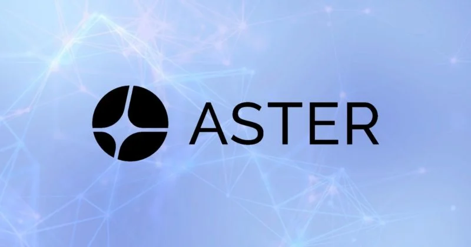

Mobirise
Aster DEX is a sophisticated decentralized exchange that serves as a cornerstone of the modern DeFi derivatives landscape. Formerly known as Astherus, the platform underwent a strategic rebranding to Aster to reflect its evolution from a simple trading application into a comprehensive, high-performance ecosystem. At its core, Aster DEX is designed to bridge the gap between the seamless user experience of centralized exchanges (CEXs) and the security and transparency of decentralized finance.
The Problem it Solves
Traditionally, traders have had to choose between two compromises. Centralized exchanges like Binance offer high speed and deep liquidity but require users to surrender control of their private keys and undergo invasive verification. Conversely, traditional decentralized exchanges often suffer from high latency, price slippage, and a lack of professional-grade tools. Aster DEX eliminates this "trade-off" by providing a non-custodial platform that matches the performance of traditional financial systems.
Core Trading Infrastructure
Aster DEX specializes in Perpetual Futures and Spot Trading. Perpetual futures are a type of derivative that allows users to speculate on the future price of an asset without an expiration date. This is a massive market in crypto, and Aster handles it by utilizing a multi-chain liquidity aggregation model.
By drawing liquidity from various networks—including BNB Chain, Ethereum, Solana, and Arbitrum—Aster ensures that traders can execute large orders with minimal "slippage" (the difference between the expected and actual price). This aggregation makes the platform resilient and ensures that even in volatile market conditions, there is enough depth to facilitate trading.
Technical Innovation: Aster Chain
The most significant leap for the project is the development of Aster Chain. This is a dedicated Layer 1 blockchain specifically engineered for high-frequency derivatives trading. While many DEXs are at the mercy of the underlying network's congestion (like Ethereum's high gas fees), Aster Chain provides:
Millisecond Execution: Vital for professional traders who need their orders filled instantly.
On-Chain Privacy: Using advanced cryptographic techniques, Aster helps protect users from "front-running," a common issue where bots see a pending trade and jump in front of it to profit.
Scalability: By having its own sovereign chain, Aster can process a much higher volume of transactions per second than a general-purpose blockchain.
User Experience: Simple vs. Pro
Aster recognizes that the DeFi community consists of both beginners and professionals. To cater to both, the platform offers two distinct interfaces:
Simple Mode: This is built for the "one-click" generation. It features a clean, intuitive layout where users can swap tokens or open positions without needing to understand complex order books or technical indicators.
Pro Mode: This is an institutional-grade terminal. It includes deep liquidity charts, advanced order types (like limit and stop-loss), and even support for stock perpetuals. This allows users to trade synthetic versions of traditional stocks like Tesla or Apple 24/7 using their crypto assets.
The $ASTER Ecosystem
The platform is powered by its native utility and governance token,
APX token). This token is central to the project's "Flywheel" effect:
Governance: Holders have a seat at the table, voting on protocol upgrades and new asset listings.
Revenue Sharing: A portion of the trading fees generated by the exchange is redistributed to users who stake their $ASTER tokens, creating a symbiotic relationship between the platform's success and the users' profits.
Deflationary Mechanics: The platform often employs buy-back and burn mechanisms to manage token supply and maintain value for long-term holders.
Why it Matters
Aster DEX is part of the "DeFi 2.0" movement, which focuses on sustainability and real-world utility. By offering privacy-focused derivatives and cross-chain functionality, it provides a safe harbor for traders who are wary of centralized entities but still require professional tools. In an era where financial privacy is increasingly under threat, Aster’s commitment to an on-chain, private trading environment makes it a vital tool for the future of digital finance.
Whether you are a retail investor looking to hedge your portfolio or a high-frequency trader seeking low-fee execution, Aster DEX offers a robust, decentralized alternative to the status quo of the financial world.
Mobirise